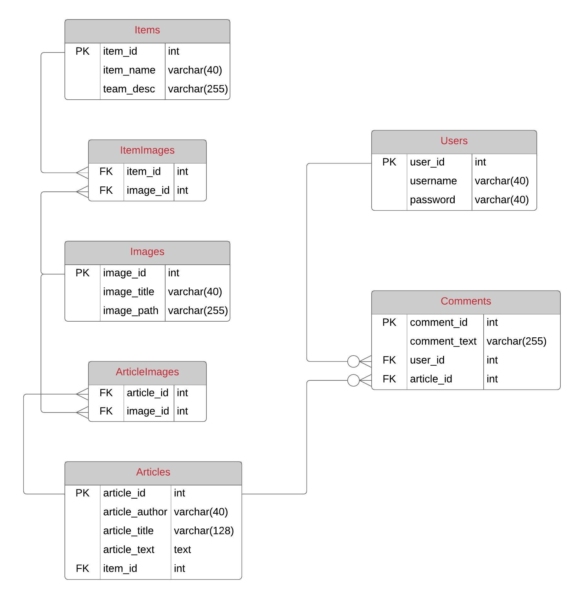
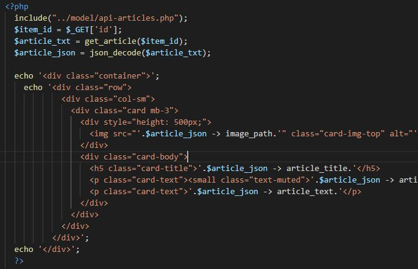

Basketball Teams
The grid system in Bootstrap breaks down the web page into columns and rows with a maximum of twelve columns across the width of the page. This is useful for displaying and organising content. It also allows columns and rows within columns which further improves the simplicity of managing content.
This week I used this feature by creating a three by four grid of Bootstrap cards. Each card contains the logo of a basketball team along with its title and description below it. Another useful aspect of the grid system is its ability to adapt to certain screen sizes depending on the class used which makes the website responsive.
I will implement menus using the Bootstrap navigation bar. Each week will include a dropdown menu which links to the commentary of that specific week. The navigation bar also adapts by turning into a hamburger menu which is a useful attribute for removing clutter on smaller screen sizes.
Forms will be useful for user registration, user login and adding comments to articles.
Screen reader classes will be useful for displaying elements only for screen readers, eliminating the need to read through insignificant contents.
Pagination is useful for going back to older articles. This will create better spacing and reduce the compression of multiple articles in one page.
Navs will be useful for building the navigation components. I can use it for highlighting the current page the user is on. It can also be used for navigation inside the user profile.
Items table stores all of the item names and descriptions.
Images table stores all of the images using it's image path as plain text and the image title.
Articles table stores all of the article information such as ID, author, title, text, and the item ID to identify which item it belongs to.
Users table stores all of the usernames and password.
Comments table stores all of the comments, user ID, and article ID to identify who the comment belongs to and to which article.

I had to create artificial tables to represent relationships for both item and article to record which item or article uses the image.
Normalisation is a must to ensure all insert, update, and deletion anomalies are eliminated because tables are joined to get accurate query results.
function get_article($item_id)
{
global $conn;
$stmt = mysqli_stmt_init($conn);
$sql = "SELECT articles.article_title, articles.article_author, articles.article_text, images.image_path, images.image_title
FROM articles, images INNER JOIN article_images
WHERE articles.article_id = article_images.article_id AND images.image_id = article_images.image_id AND articles.item_id = ?";
mysqli_stmt_prepare($stmt, $sql);
mysqli_stmt_bind_param($stmt, 's', $item_id);
mysqli_stmt_execute($stmt);
$result = mysqli_stmt_get_result($stmt);
$row = mysqli_fetch_array($result);
return json_encode($row);
}
This method is used for retrieving an item's article from the database and the image associated with the article.
It expects an item identification as a parameter which will be used as the condition value within the query. Specifying the item ID enables the query to display only the article associated with the item. The query result is stored in a variable which is then encoded into JSON format before it is returned to where the method was called.

I call this method within the view code where I'm displaying the article for the chosen item. I used a GET request to get the value of the item which is sent as an argument to the get_article() method of the API.